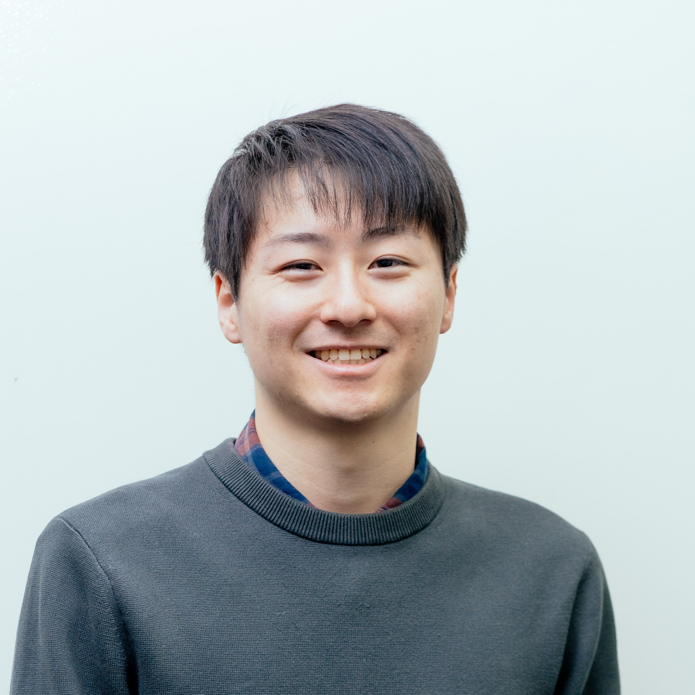
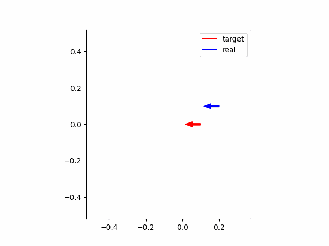
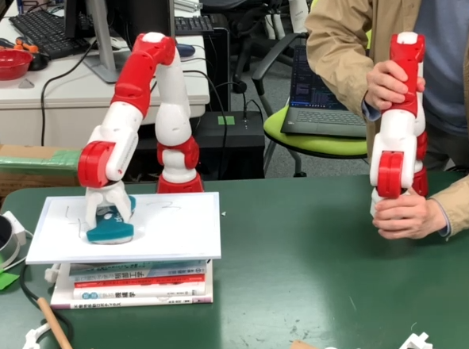

Takuya Okubo
大久保 拓哉
takuyaokubo069@gmail.com
CV
/
Email
/
LinkedIn
/
GitHub
/
Twitter (X)
学歴
- 群馬工業高等専門学校 電子情報工学科, 2016年4月入学 2021年3月卒業
- 東京大学 工学部計数工学科, 2021年4月入学 2024年3月卒業
- 現在：東京大学 情報理工学系研究科システム情報学専攻, 2024年4月入学

自己紹介
幼少期からモノづくり・電子工作が趣味で、ペルチェ式冷蔵庫やロボットアーム、倒立振子などを製作。趣味が高じて群馬高専の電子情報工学科に入学し、回路学やプログラミングなどの専門知識を学ぶとともに、経験を積むためにゲームの制作や競技プログラミングコンテストに出場。高専、東大計数工学科を卒業し、現在は東大情報理工学系研究科システム情報学専攻に所属。縁あって松尾研究室TRAIL（Tokyo Robotics and AI Lab）に所属し、ロボットの高機能化に向けた研究・開発に取り組んでいる。
使用言語・ライブラリ
- C++
- C#
- Swift
- MATLAB
- Python
- ROS
- Unity
スキル
- 数学, 物理
- 制御理論(古典・現代・モデル予測制御)
- 最適化手法(線形計画法・非線形最適化)
- 数値解析
- 画像処理
- 機械学習, 深層学習, 強化学習
- CAD(Inventor, Fusion360, KiCAD等)
プロジェクト経験
- マリオ風2D横スクロールアクションゲームの制作
- 陣取りゲーム「巡りマス」のアルゴリズム開発（全国高等専門学校プログラミングコンテスト 2018 競技部門出場）
- 疲労度を考慮した予定推薦アプリの開発（100 Program 1期）
- 人狼AIの開発（第5回人狼知能国際大会 自然言語部門出場 キャラクター賞）
- Spring Founders Program (SAVERS)
- Todai To Texias (SAVERS)
コンテスト参加・受賞歴
- 2014年 埼玉県児童・生徒発明創意くふう展 参加, 埼玉県産業教育振興会長賞受賞
- 2018年 全国高等専門学校プログラミングコンテスト 競技部門出場
- 2022年 東京大学 産学協創推進本部主催 100 Program 参加
- 2023年 第5回人狼知能国際大会 自然言語部門出場, キャラクター賞受賞
- 2023年 東京大学 産学協創推進本部主催 Todai To Texas 採択, MKI賞受賞
- 2023年 東京大学 産学協創推進本部主催 Spring Founders Program 採択
- 計測自動制御学会計測部門・九州支部，電気学会計測技術委員会連携ポスターセッション（若手部門）優秀賞
Research
-
 GenDOM: Generalizable One-shot Deformable Object Manipulation
GenDOM: Generalizable One-shot Deformable Object Manipulation
So Kuroki, Jiaxian Guo, Tatsuya Matsushima, Takuya Okubo, et al.
1. 柔軟物のヤング率などのパラメータをデモから推定、2. シミュレータにパラメータを反映、3. 反映したシミュレータで学習、というパイプラインにより汎化可能な柔軟物のマニピュレーションが実現できることを提案・示した論文。私は柔軟物の点群処理・ロボットアームの制御関連のエンジニアリングのお手伝いをしました。 -
AIWolfDial 2023: Summary of Natural Language Division of 5th International AIWolf Contest
Yoshinobu Kano, Neo Watanabe, Kaito Kagaminuma, Claus Aranha, Jaewon Lee, Benedek Hauer, Hisaichi Shibata, Soichiro Miki, Yuta Nakamura and Takuya Okubo
人狼知能国際大会の自然言語部門に出場したAIWolfDial 2023の概要をまとめた論文です。 私はAIWolfK2Bという名称の人狼AIモデルを開発・提案し，その内容を論文で述べました．また、出場した大会ではキャラクター賞を受賞しました。 -
独立低ランク行列分析における反復射影法の高速化・安定化アルゴリズム
石川 悠人, 大久保 拓哉, 高宗 典玄, 北村 大地, 中村 友彦, 猿渡 洋, 高橋 祐, 近藤 多伸
日本音響学会 2024年春期研究発表会, pp. 87–90, Mar. 2024.
音源分離手法である独立低ランク行列分析にて使用される反復射影法では， 一般の行列に対する逆行列計算を必要するため，数値計算上低速・不安定であるという問題があった． そこで，逆行列を正定値Herimite行列の逆行列に変形することで高速化・安定化を実現した． -
空間正則化付き独立低ランク行列分析におけるベクトルワイズ座標降下法の高速化・安定化アルゴリズム
石川 悠人, 大久保 拓哉, 高宗 典玄, 北村 大地, 中村 友彦, 猿渡 洋, 高橋 祐, 近藤 多伸
電子情報通信学会技術研究報告, vol. 123, pp. 43–50, Feb. 2024.
音源分離手法の空間正則化付き独立低ランク行列分析にて使用されるベクトルワイズ座標降下法では， １．複数の一般の行列に対する逆行列計算を必要とし数値計算上低速・不安定であること， ２．場合分けによる不安定性が存在 という問題があった． そこで，複数の一般の逆行列を同一の正定値Herimite行列の逆行列に変形するとともに， 解析的な変形により場合分けを統合することで高速化・安定化を実現した．
Hardware


Software
-

-

-
バイラテシステムの再現・開発
文献「K. Yamane, et. al., "Soft and Rigid Object Grasping With Cross-Structure Hand Using Bilateral Control-Based Imitation Learning," in IEEE Robotics and Automation Letters, vol. 9, no. 2, pp. 1198-1205, Feb. 2024」 に記載されているバイラテシステムを参考に， スクラッチから外乱オブザーバ・反力推定オブザーバ等を構成し，これらを用いたバイラテシステムを構築しました． 言語はC++を使用し，制御周期は500Hzです． -
-
陣取りゲーム「巡りマス」のアルゴリズム開発
2018年全国高等専門学校プログラミングコンテスト競技部門のゲーム「巡りマス」にチームで出場するに当たって、ゲーム攻略用のアルゴリズムの開発を担当しました。 -
疲労度を考慮した予定推薦アプリの開発
100 Programと呼ばれる学生支援プログラムに参加し、チームを組んで疲労度を考慮した予定推薦アプリを開発しました。私は主にアルゴリズムの考案と実装を担当しました。